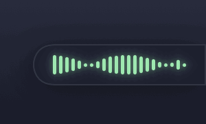

Free, open-source dictation and meeting notes for Mac
Dictation that lands wherever your cursor is, and meeting notes that write themselves when the call ends. Nothing joins your call and nothing leaves your Mac. One 12 MB Swift app, MIT licensed.
12 MB disk image · drag to Applications · install help · macOS 14+ · Apple Silicon · v0.2.2

Install: open the disk image, drag Speakhold to Applications, open it. If macOS says it cannot check the app, the install page shows the twenty-second way through. Or skip the dialog entirely with one line in Terminal:
curl -fsSL https://speakhold.wildinteractive.app/install.sh | sh
Dictation apps charge monthly. Notetakers join the meeting as a guest. Both upload your voice.
Clients notice the notetaker, and some ask it to leave. The audio goes to someone else's server to be transcribed. Meanwhile the chip in a Mac has run Whisper comfortably since 2023.
Speakhold does both jobs on the Mac, for free, with nobody in the meeting.
What it does
Say the sentence and it is typed. Record the call and the notes are written. The audio is transcribed on the Neural Engine and deleted.
Hold the chord, say the sentence, let go. It lands in Slack, Mail, Xcode, the browser, wherever the cursor is, with the ums gone and your names spelled right. Left and right modifiers are different keys, so the default collides with nothing.
Parakeet or Whisper on the Neural Engine · polish on-device with Apple Intelligence · undo on the bar
Compared with Willow VoicePress record on a Zoom, Meet or Teams call. Your microphone and what the Mac is playing are recorded as two streams through macOS itself, so you and the other side are labelled and nobody joins the meeting. When the call ends it stops itself and writes the notes in the background while you get on with something else.
Summary · Decisions · Action items · Open questions · full transcript · one markdown file · audio deleted
How meeting notes workAgreed the brochure goes to print on the 14th. They need final artwork by the 10th and a decision on paper stock this week.
How it works
No account, no onboarding. The speech model downloads once on first launch, about 630 MB, and everything after that is on the Mac.
Dictation
Left ⌃ + left ⌥, or any chord you choose. Press once to toggle, tap Space to go hands-free.
The bar opens at the edge of the screen and moves with your voice. The microphone is only open while you hold.
Parakeet (or Whisper) runs in-process, the polish removes fillers, and the sentence is pasted into the frontmost app.
Meetings
From the menu bar, or say yes when Speakhold notices an app on a call.
Type your own notes as it runs. Tap the chord once to mark a moment. Nothing joins the meeting.
It stops when the call app lets go of the microphone, writes the file in the background, and a notification opens it.
If Claude Code is installed, the notes go through it under your existing subscription. A 30 minute call comes back in about twenty seconds. Otherwise use your own Claude key, or let Apple Intelligence write them on-device.
Either way the audio never leaves the Mac. With Claude, the transcript text is sent and nothing else.
brew install --cask sturzael/tap/speakholdWhat it refuses to do
Willow is US$15 a month. Fireflies is per seat. Speakhold is MIT licensed and free, because a Mac already has the chip for this.
Clients notice the notetaker. Speakhold records your microphone and the Mac's audio through macOS's own permission, so the other side sees nobody.
Parakeet and Whisper run on the Neural Engine. Audio is transcribed on the Mac and deleted. The only thing that can leave is transcript text, and only if you choose Claude for the notes.
Hold to talk, press to toggle, tap Space to go hands-free. Left and right modifiers count as different keys.
On macOS 26, Apple Intelligence removes fillers, fixes punctuation and spells names from your dictionary. Spoken commands and text replacements always work.
Undo sits on the bar after a paste. Try again re-runs a failed recording. Tap the chord once during a call to mark a moment.
One Swift binary, 12 MB. Lives in the menu bar; the Dock icon is optional. Launch at login.
speakhold://toggle or Speakhold --toggle drives it from SketchyBar, Raycast or a Shortcut.
Meetings are named from the matching calendar event, the far-side voices are told apart, and the file lands in a folder you choose.
Compared
Prices and features as of October 2026. Corrections welcome via pull request.
| Speakhold | Willow Voice | Wispr Flow | Superwhisper | |
|---|---|---|---|---|
| Price | Free | US$12 to 15/mo | US$12 to 15/mo | US$8.49/mo |
| Audio stays on device | Yes | Cloud by default | Cloud | Yes |
| Native Swift | Yes | No | No | Yes |
| Left/right-specific chords | Yes | No | No | Partial |
| Polish without an API key | Yes, on-device | Cloud | Cloud | Yes |
| Records calls, no bot, no virtual driver | Yes | No | No | Meeting mode |
| Open source | Yes, MIT | No | No | No |
Longer comparisons: Willow Voice · Wispr Flow · Superwhisper · MacWhisper · Fireflies · Otter · How to record a call without a bot
Audio never does. It is transcribed on the Neural Engine and deleted. The speech models download once from Hugging Face on first run. If you choose Claude for the meeting notes or the cleanup, the transcript text is sent with your key or through Claude Code under your plan, and nothing else. With Apple Intelligence, nothing leaves at all. There is no account, no analytics and no update check.
Both are built in. Parakeet (NVIDIA, through FluidAudio) is the default for English: on the same six-second clip it took 0.1 s against Whisper's 0.7 s, gave the same words, and stays silent over music where Whisper writes "Thank you". Whisper Large v3 Turbo is there for other languages and for people who want the personal dictionary applied inside the decoder. Meetings use the same Parakeet model, loaded once. Switch in Settings → General → Engine.
Your microphone and the Mac's audio are recorded as two streams, so your side and theirs never mix. On the far side, turn on "Tell the other voices apart" in Settings → Meetings and an on-device speaker model labels Speaker 1, 2, 3.
Speakhold runs the claude command in print mode on your own Mac under your own login, the same as typing the prompt into a terminal. No key is extracted and nothing is proxied. If that ever changes, the API key path and Apple Intelligence are already there.
Yes. MIT licence, no account, no trial, no Pro tier. It is free because the Mac already has the chip for this, and because a star on GitHub is the only thing it asks for.
Dictation does, completely, once the speech model has downloaded on first launch. Meeting notes written by Apple Intelligence also work offline. Only the Claude option needs a connection.
Any app that plays audio: Zoom, Google Meet, Teams, FaceTime, Slack huddles, a browser tab. It records your microphone and what the Mac is playing through macOS's System Audio Recording permission, so there is no virtual audio driver and no bot.
It is not notarised yet. On macOS 15 and later, click Done, then System Settings → Privacy & Security → Open Anyway, once. On macOS 14, right-click the app and choose Open. Or skip the dialog with the one-line Terminal install on the install page. The code is on GitHub if you would rather build it yourself.
No. It needs Apple Silicon for the Neural Engine, and macOS 14 or later. Polish and on-device notes need macOS 26.
Elliot at Wild Interactive in Wellington, New Zealand. He was paying for Willow to dictate and Fireflies to take notes, both sent his audio off the Mac, and he wrote one small Swift app that does both. It replaced two subscriptions, so he open-sourced it.